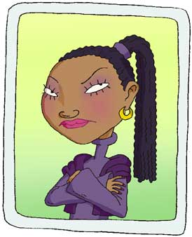

|
 |
Miranda Killgallen was Courtney's right hand until Ginger came along. Protective of her place as Courtney’s best friend, Miranda is often vicious and cruel.
Some kids suspect she has ice water running through her veins.
Unable to mask her contempt of Ginger, Miranda rattles with hatred when "that Foutley girl" is around.
Although Courtney enjoys Miranda's fierce loyalty, she often has to remind her that they are in the business of total and extreme popularity... not homicide.
Miranda is likely to plot and execute all sorts of plans to destroy Ginger-- but in secret, so Courtney wouldn't know.
Miranda whispers hideous things to Ginger under her breath, when no one is listening.
|